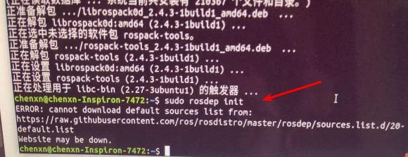
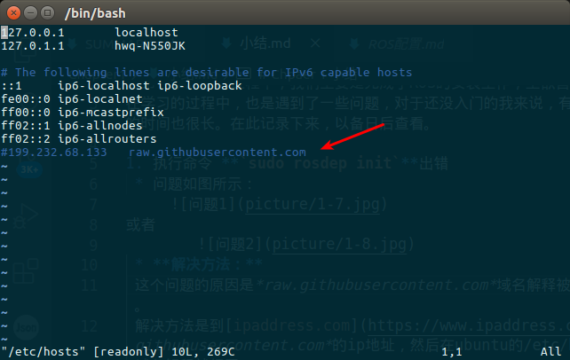
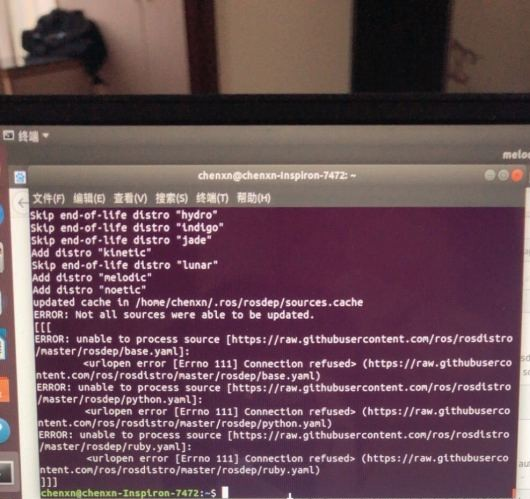

Chpaer 1 小结
在第一章的学习过程中，我们主要是完成了ROS的安装工作，工欲善其事，必先利其器。
在学习的过程中，也是遇到了一些问题，对于还没入门的我来说，有的问题反复出现，解决的时间也很长。在此记录下来，以备日后查看。
1. 执行命令 sudo rosdep init出错
- 问题如图所示：
 - 解决方法：
这个问题的原因是raw.githubusercontent.com域名解释被污染了（你懂的...）。
解决方法是到ipaddress.com上查询raw.githubusercontent.com的ip地址，然后在ubuntu的/etc/hosts文件上面加入这条域名解释就行了
注：查询到的IP地址不一定是下图所示 sudo vim /etc/hosts
2. 执行命令 rosdep update出错
- 问题如图所示：
 - 解决方法：
主要是网络访问不稳定，只有多来几次。或者换成手机热点多试几次。